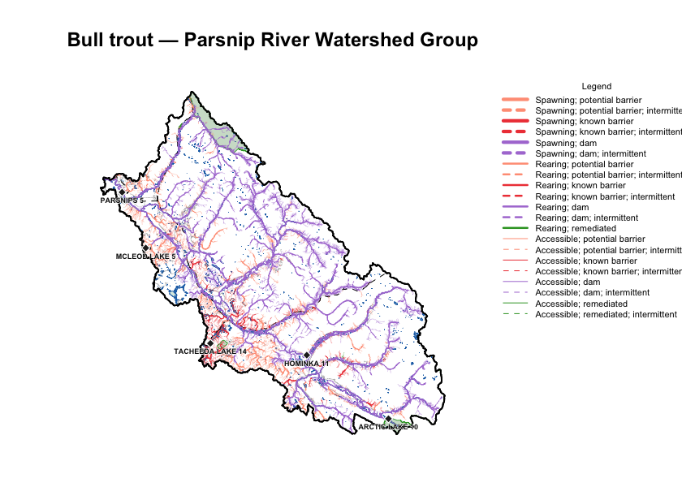
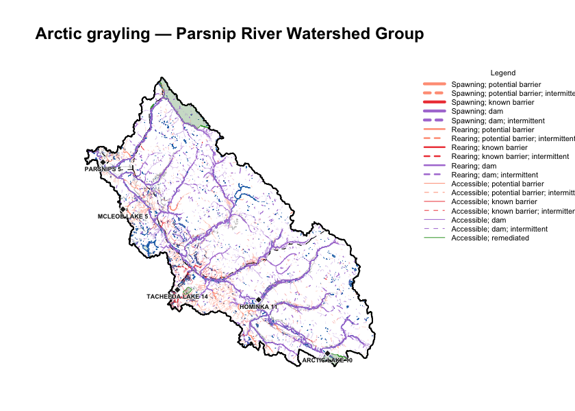
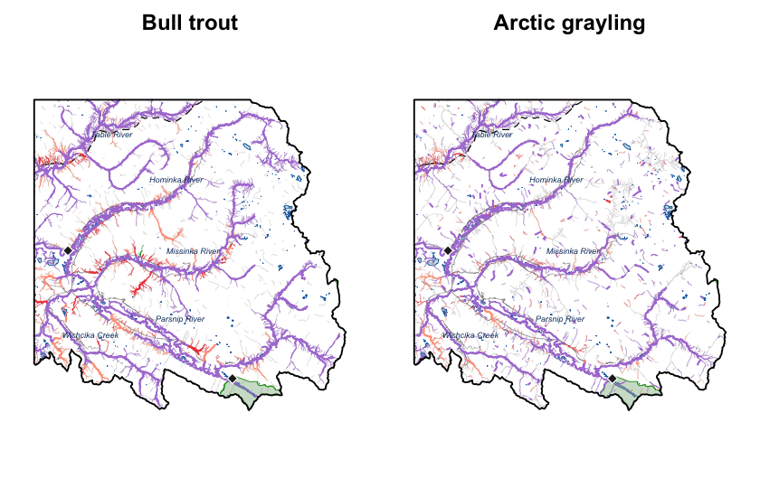

Appendix - Parsnip River Habitat and Connectivity Modelling
For any stream, we want to know three things: can a fish get there, is it good habitat, and what — if anything — blocks the way. We model this for every segment of the stream network in a watershed group, and for each species we work out:
- Access — can the fish reach the segment, or is the route downstream likely too steep (gradient), or cut off by a barrier such as a dam, waterfall, or perched culvert?
- Habitat — if it is reachable, is the segment likely large enough (channel width) and its gradient gentle enough for the modelled species to use it as spawning habitat, rearing habitat, or simply passable water with neither?
- Barriers — the most significant obstacle downstream: a dam, a known barrier that has been assessed in the field (a road culvert, weir, etc.), a modelled crossing (predicted from road–stream intersections but not yet field-checked), or one that has since been remediated (fixed).
bcfishpass (Hillcrest Geographics)
produces this per-segment classification province-wide. We reproduce it, and
because we re-express the methodology in our own tools we can re-parameterise the
rules to our own values and extend the method to species bcfishpass does not
yet model.
We demonstrate both here for the Parsnip River Watershed Group: reproducing the
bull-trout (BT) classification, and a net-new classification for Arctic
grayling (GR).
The Parsnip River Watershed Group sits between Prince George and Mackenzie, BC. The Parsnip flows north into the southern arm of Williston Reservoir, joining the Peace River system; from there the drainage runs Peace → Slave → Mackenzie, ultimately discharging to the Arctic Ocean via the Mackenzie Delta. Both bull trout and Arctic grayling are cold-water species whose distributions we resolve through gradient, channel width, and access. Bull trout — provincially blue-listed and a COSEWIC species of special concern in the Western Arctic population — spawn as adfluvial migrants in cold, low-gradient tributaries such as the Misinchinka and Anzac. Arctic grayling, at the southern edge of their range in the Williston watershed, hold to cooler, larger (fourth-order and up) clear-water reaches and spawn over fine gravels.
We build on the canonical fwapg /
bcfishpass / bcfishobs stack from
Hillcrest Geographics — porting the processing methodology into our own
fresh and
link packages while still
drawing on the canonical bcfishpass inputs (crossing overrides and the like).
That lets us experiment with the rules for species already modelled and extend to
species not yet modelled — here, Arctic grayling — while staying checkable,
segment for segment, against the canonical outputs.
Modelling parameters
The main parameters are the maximum gradients for access, spawning, and rearing and a minimum channel width for habitat (we apply further rules too — waterbody and stream-edge types, clustering of rearing with spawning habitat, and others). The values we applied are below.
param_tab <- data.frame(
species = c("BT", "GR"),
access_grad_max = c(0.25, 0.15),
spawn_grad_max = c(0.0549, 0.0249),
rear_grad_max = c(0.1049, 0.0349),
spawn_cw_min_m = c(2, 4),
rear_cw_min_m = c(1.5, 1.5),
stringsAsFactors = FALSE
)
knitr::kable(
param_tab, row.names = FALSE,
col.names = c("species", "access grad max", "spawn grad max", "rear grad max",
"spawn CW min (m)", "rear CW min (m)"),
caption = paste0(
"Access, spawning, and rearing gradient ceilings and minimum channel ",
"widths applied for the two species. Grayling's tighter access ceiling and ",
"gradient windows give it the smaller modelled network."
)
)| species | access grad max | spawn grad max | rear grad max | spawn CW min (m) | rear CW min (m) |
|---|---|---|---|---|---|
| BT | 0.25 | 0.0549 | 0.1049 | 2 | 1.5 |
| GR | 0.15 | 0.0249 | 0.0349 | 4 | 1.5 |
Reproducing bcfishpass (parity)
We compare our per-segment classification against the bcfishpass snapshot,
segment by segment. Of the two species, only bull trout occurs in the watershed
group, so this is a single-species comparison.
ptab <- parity[, c("species", "total_segs", "match_pct", "n_diffs")]
names(ptab) <- c("species", "segments", "match %", "n diffs")
knitr::kable(
ptab, row.names = FALSE,
caption = "Per-segment classification parity for bull trout, our values vs the bcfishpass snapshot."
)| species | segments | match % | n diffs |
|---|---|---|---|
| BT | 43120 | 99.04 | 416 |
cat(sprintf(paste0("We reproduce **%.2f%%** of bcfishpass's per-segment ",
"bull-trout classification across %s segments, with %s ",
"disagreements, consistent with the ~99.7%% study-area ",
"median we see across the Peace.\n"),
parity$match_pct[1],
format(parity$total_segs[1], big.mark = ","),
format(parity$n_diffs[1], big.mark = ",")))We reproduce 99.04% of bcfishpass’s per-segment bull-trout classification across 43,120 segments, with 416 disagreements, consistent with the ~99.7% study-area median we see across the Peace.
bt <- streams[!is.na(streams$mapping_code_bt) & nzchar(streams$mapping_code_bt), ]
bt$col <- cls$values[bt$mapping_code_bt]
bt$col[is.na(bt$col)] <- "#999999"
bt$w <- width_for(bt$mapping_code_bt)
bt$lty <- ifelse(grepl(";INTERMITTENT", bt$mapping_code_bt), "dashed", "solid")
op <- par(mar = c(2, 1, 4, 8))
plot(sf::st_geometry(aoi), col = NA, border = "black", lwd = 1.5, axes = FALSE,
main = "Bull trout — Parsnip River Watershed Group")
draw_context_full()
plot(sf::st_geometry(bt), col = bt$col, lwd = bt$w * 0.6, lty = bt$lty, add = TRUE)
plot(sf::st_geometry(aoi), col = NA, border = "black", lwd = 1.5, add = TRUE)
draw_reserves(reserves)
label_reserves(reserves)
legend_mapping_code(bt$mapping_code_bt)
Figure 5.19: Bull-trout habitat and connectivity classification across the Parsnip River Watershed Group. Each stream segment is coloured by the most significant barrier downstream and weighted by habitat value; the legend gives the full key.
Arctic grayling — extending the method
bcfishpass does not yet model Arctic grayling, so this is net-new output —
there is nothing to compare against. We apply the same method, re-parameterised
for grayling, and map the result with the same symbology so the two species are
directly comparable.
gr <- streams[!is.na(streams$mapping_code_gr) & nzchar(streams$mapping_code_gr), ]
gr$col <- cls$values[gr$mapping_code_gr]
gr$col[is.na(gr$col)] <- "#999999"
gr$w <- width_for(gr$mapping_code_gr)
gr$lty <- ifelse(grepl(";INTERMITTENT", gr$mapping_code_gr), "dashed", "solid")
op <- par(mar = c(2, 1, 4, 8))
plot(sf::st_geometry(aoi), col = NA, border = "black", lwd = 1.5, axes = FALSE,
main = "Arctic grayling — Parsnip River Watershed Group")
draw_context_full()
plot(sf::st_geometry(gr), col = gr$col, lwd = gr$w * 0.6, lty = gr$lty, add = TRUE)
plot(sf::st_geometry(aoi), col = NA, border = "black", lwd = 1.5, add = TRUE)
draw_reserves(reserves)
label_reserves(reserves)
legend_mapping_code(gr$mapping_code_gr)
Figure 5.20: Arctic grayling habitat and connectivity classification across the Parsnip River Watershed Group — a species bcfishpass does not yet model. Same symbology as the bull-trout map, so the two are directly comparable; grayling’s modelled network is the smaller of the two.
Maps — detail comparison
The full-watershed views compress a lot of network. Cropping to a sub-reach puts bull trout and grayling side by side at full resolution — the reaches where grayling carries a classification that bull trout does not are where the extension does genuinely new work.
e <- sf::st_bbox(aoi)
inset_bbox <- sf::st_bbox(c(
xmin = unname(e["xmin"] + (e["xmax"] - e["xmin"]) * 0.55),
ymin = unname(e["ymin"]),
xmax = unname(e["xmax"]),
ymax = unname(e["ymin"] + (e["ymax"] - e["ymin"]) * 0.45)
), crs = sf::st_crs(aoi))
crop_sf <- function(x) {
if (is.null(x) || nrow(x) == 0L) return(NULL)
out <- suppressWarnings(sf::st_crop(x, inset_bbox))
if (nrow(out) == 0L) NULL else out
}
frame <- sf::st_as_sfc(inset_bbox)
all_d <- crop_sf(streams)
bt_d <- crop_sf(bt)
gr_d <- crop_sf(gr)
wb_d <- crop_sf(waterbodies)
aoi_d <- crop_sf(aoi)
roads_d <- crop_sf(roads)
rail_d <- crop_sf(railways)
res_d <- crop_sf(reserves)
parks_d <- crop_sf(parks)
ns_d <- crop_sf(named_streams)
panel <- function(seg, title) {
plot(sf::st_geometry(frame), col = NA, border = NA, axes = FALSE,
main = title)
if (!is.null(wb_d)) {
plot(sf::st_geometry(wb_d), col = "#a3cdb988", border = "#2171B5",
lwd = 0.4, add = TRUE)
}
if (!is.null(all_d)) {
plot(sf::st_geometry(all_d), col = "#cccccc", lwd = 0.4, add = TRUE)
}
if (!is.null(roads_d)) {
plot(sf::st_geometry(roads_d), col = "#666666aa", lwd = 0.4, add = TRUE)
}
if (!is.null(rail_d)) {
plot(sf::st_geometry(rail_d), col = "black", lwd = 1.0, lty = "dashed",
add = TRUE)
}
if (!is.null(parks_d)) {
plot(sf::st_geometry(parks_d), col = "#639b5f55", border = "#33a02c",
lwd = 0.8, add = TRUE)
}
if (!is.null(seg) && nrow(seg) > 0L) {
plot(sf::st_geometry(seg), col = seg$col, lwd = seg$w, lty = seg$lty,
add = TRUE)
}
draw_reserves(res_d, fill = "#b2b2b2aa", cex = 1.0)
if (!is.null(aoi_d)) {
plot(sf::st_geometry(aoi_d), border = "black", lwd = 1.5, add = TRUE)
}
if (!is.null(ns_d)) {
dedup <- ns_d[!duplicated(ns_d$gnis_name), ]
npts <- suppressWarnings(sf::st_centroid(sf::st_geometry(dedup)))
text(sf::st_coordinates(npts), labels = dedup$gnis_name, cex = 0.45,
font = 3, col = "#0d3a6c")
}
}
op <- par(mfrow = c(1, 2), mar = c(1, 1, 2, 1))
panel(bt_d, "Bull trout")
panel(gr_d, "Arctic grayling")
Figure 5.21: South-east corner of the Parsnip River Watershed Group at full resolution: bull trout (left) and Arctic grayling (right), same extent and symbology. Grey background streams are the full modelled network, so the coloured overlay shows where each species’ classification reaches.